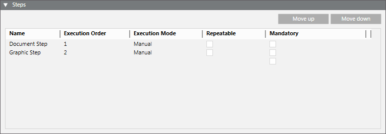

Operating Procedures Workspace
In Engineering mode, when you select an operating procedure in System Browser, a workspace displays where you can configure the settings, filters, and steps for that procedure.

General Settings of an Operating Procedure
When you configure an operating procedure, the General Settings expander lets you specify the general parameters of an operating procedure.

Priority
Value indicating the precedence of the operating procedure, where 0 denotes the highest priority. If an event occurs that matches the filters of more than one procedure, the one with the highest priority gets executed. The priority is defined when the procedure is created. The system does not allow two procedures to have the same priority. You can modify this value also from the operating procedure list (see Main Operating Procedures Folder Workspace).
Steps Execution Type
Specifies whether the procedure steps have to be executed in order:
- Free: The steps can be executed in any order.
- Sequential: The mandatory steps will be executed in a specific sequential order, while optional steps can be executed in any order.
Force manual close
- If you select Yes, when the operating procedure is complete, the operator will have to manually close the event (send a close command).
- No: (Default setting): The event will close automatically when the procedure is complete.
On new occurrence/If happens after
Specifies what happens if the triggering alarm occurs again (recurring event):
- Link existing procedure: The currently executing instance of the procedure will be used to handle the recurring event, and any steps already executed will not be reset.
- Link existing procedure and reset steps: The currently executing instance of the procedure will be used to handle the recurring event, but any steps already executed will be reset. This means that the operator will have to start the procedure from the beginning. With this option you can also set a time interval (default: 300 seconds) that must elapse between two successive recurring events. If a recurring event happens after that time, the procedure steps will be reset.
- Create new procedure: A separate instance of the procedure will be started to handle the recurring event. With this option you can also set a time interval (default: 300 seconds) that must elapse between two successive recurring events. If a recurring event happens after that time, a new procedure will be started to handle the recurring event. If instead the recurring event happens before this time has elapsed, the currently executing procedure will be used to handle the event.
Keep primary event
- If you select Yes, in case the triggering alarm occurs again (recurring event), the primary event (that is, the original event that first triggered the operating procedure) cannot be closed until any other recurrences of the same event have been closed.
- If you configure Keep primary event = Yes, and Force Manual Close = No, the system will automatically close the primary event only when all its recurrences have been handled and automatically closed.
- If you configure Keep primary event = Yes, On new occurrence = Create new procedure, and If happens after = [ss], when the timeout expires, any recurring events might be re-assigned to other instances of the same operating procedure, and consequently belong to other primary events.
- No (Default setting): The primary event can be closed even if any other recurrences of the same event have not yet been closed.
Notes
Text field where you can enter comments or remarks.
Filters of an Operating Procedure
You use filters to configure when and for what combination of event conditions an operating procedure will be triggered.

When you configure an operating procedure, the Filters expander lets you set the following:
- Time and Organization Mode. This defines a set of time-dependent preconditions for the operating procedure (for example, only if it is a weekday, and the building is occupied). For details, see Time and Organization Mode Conditions. Each condition occupies one row and at least one row must be true (OR logic between rows) to assert the time-dependent preconditions trigger.
- Events. This defines the event or combination of events (for example, an alarm in a critical area) that will trigger the operating procedure. For details, see Events Conditions. Each condition occupies one row and at least one row must be true (OR logic between rows) to assert the events trigger. If you do not specify at least one type of event in the Events expander, the procedure will never be triggered.
An AND logic is applied between the filters: time-dependent and events conditions must both be asserted (true) for the operating procedure to be triggered.
If an event occurs, which triggers more than one operating procedure, the one with the higher priority will start in assisted treatment.
Steps of an Operating Procedure
When you configure an operating procedure, the Steps expander displays the list of steps of the currently selected operating procedure and lets you modify some aspects of the steps execution. For more details, see General Settings of a Procedure Step.
